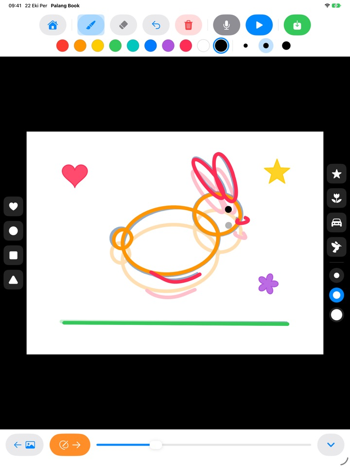
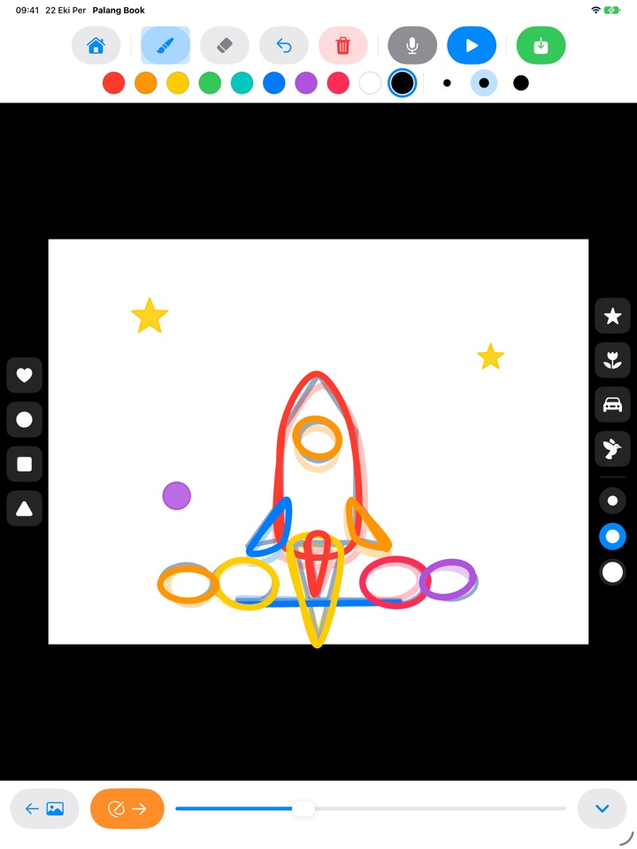
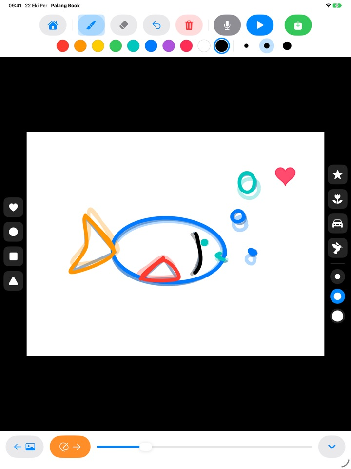
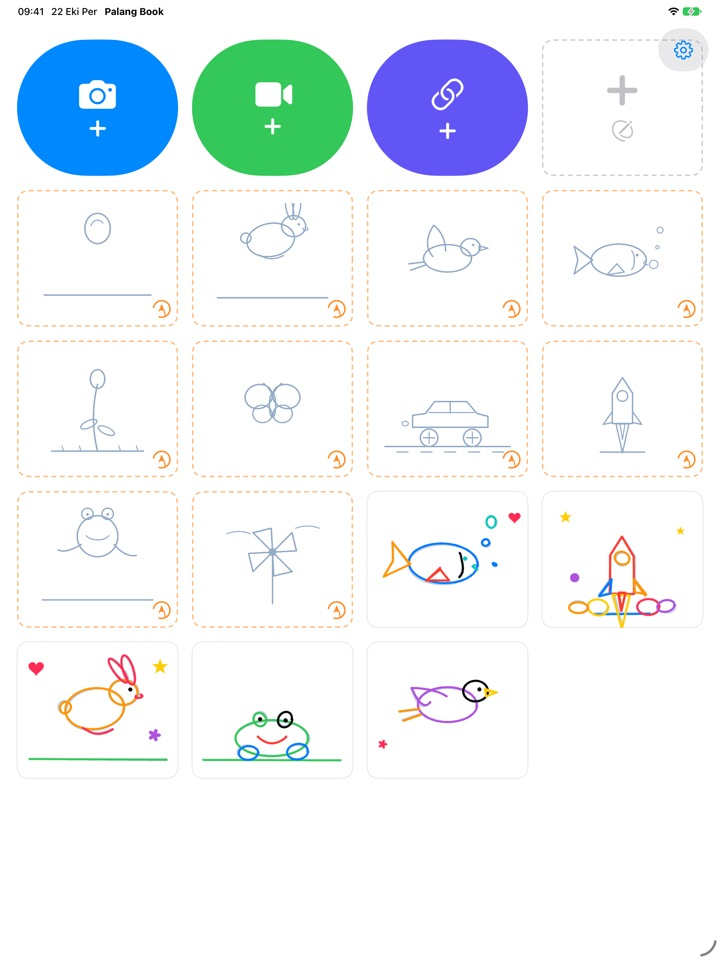

Üstünden çiz,
çizimin canlansın
Çocuk soluk bir kılavuzun üstünden sayfa sayfa çizer. Oynat'a bastığında kılavuz kaybolur, yalnızca kendi çizgileri hareket eder. Her düğme bir resim olduğu için okumayı bilmeden de kendi başına yapabilir.
iPad için. Üç üzerinden çizme seti ücretsiz.

Birkaç sayfa çizin
Bir şey çizin, sonra sonraki sayfa için turuncu oka dokunun. Önceki sayfa hafifçe görünür. İki üç sayfa çizdikten sonra mavi Oynat düğmesine dokunun.
Bu güzel çizimin öylece durması yazık olmaz mı?
Animasyon, neredeyse aynı resmi küçük değişikliklerle tekrar tekrar çizmek demektir ve çocuklar tek başlarına nereden başlayacaklarını bilemez. Palang Book, hareketi zaten içinde taşıyan soluk bir kılavuz serer, çocuğa yalnızca çizgiyi takip etmek kalır. Oynat'a bastığı anda çizimi hareket eder.
Çizgiyi takip et, animasyon hazır
Zıplayan bir top, hoplayan bir tavşan, uçan bir kuş, yüzen bir balık, açan bir çiçek, bir kelebek, bir yarış arabası, bir roket, bir kurbağa ve bir rüzgâr gülü. Her sette yaklaşık 20 kılavuz sayfa var.
Önceki sayfa hafifçe göründüğü için sıradakini çizmek kolaydır. Oynatınca kılavuz kaybolur ve yalnızca çocuğunuzun çizimi hareket eder.

Damgalar ve on renk
Kalp, daire, kare, üçgen, yıldız, çiçek, araba ve kuş damgalarını dokunarak basın. Damgalar ve fırçalar üçer boyutta, renkler ise tam on tane.
Silgi ve geri alma sayesinde hatalar kolayca düzelir. Parmakla ya da Apple Pencil ile çizin.

Kendi videolarınızın üstüne ya da boş kâğıda
Kendi çektiğiniz bir videoyu veya Fotoğraflar'dan bir videoyu getirip üstünden çizin. Arka planı gizleyince yalnızca çizilen sahneler beyaz kâğıt üzerinde art arda oynatılır. Hiç kılavuz olmayan boş bir flipbook da var.
Mikrofona dokunup çocuğunuzun sesini de kaydedin, bitmiş eseri video olarak Fotoğraflar'a kaydedip ailenizle paylaşın.

Üç adımda başlayın
- 1
Bir kılavuz kartına dokunun
Ana ekrandaki turuncu kesik çizgili kartlar üzerinden çizme setleridir.
- 2
Çizin, sayfayı çevirin
Turuncu ok sizi sonraki sayfaya götürür.
- 3
Oynat'a dokunun
Mavi Oynat düğmesine dokunun, çizim hareket etsin.
Düğmeler ne işe yarar
- Turuncu kesik çizgili kart
- Üzerinden çizmeye başla
- Gri kesik çizgili kart
- Boş flipbook
- Mavi kamera
- Video çek, üstüne çiz
- Yeşil video
- Fotoğraflar'dan video getir
- Çivit mavisi bağlantı
- Bir video dosyasının bağlantısını yapıştır
- Turuncu ok
- Sonraki sayfa
- Mavi Oynat
- Animasyonu oynat, durdurmak için tekrar dokun
- Kıvrık ok
- Son çizgiyi geri al
- Kırmızı çöp kutusu
- Tüm sayfayı temizle (geri al ile geri gelir)
- Mikrofon
- Animasyon tekrar ederken ses kaydet
- Video simgesi
- Video arka planını gizle (pembe ve çizgiliyse yalnızca çizimler)
- Yeşil kaydet
- Fotoğraflar'a video olarak kaydet
Bir çalışmayı silmek için ana ekranda kartına dokunup basılı tutun. Çizimleri, ses kaydı ve getirilen video da birlikte silinir.
Ücretsiz deneyecek çok şey var. Sevdiyseniz Ömür Boyu Erişim.
Ücretsiz
- 3 üzerinden çizme seti (top, tavşan, çiçek)
- 3 çalışma saklama
- 1 video getirme
- 10 sayfaya kadar boş flipbook
- 15 saniyeye kadar ses kaydı
- Damgalar, renkler, fırçalar ve Fotoğraflar'a kaydetme
Ömür Boyu Erişim
- Gelecekte çıkacaklar dâhil tüm üzerinden çizme setleri
- Çalışma, sayfa, video ve kayıt süresinde sınır yok
- Kaydedilen videoların sonunda Palang Book kartı yok
Abonelik değil, tek seferlik satın alma. Aile Paylaşımı ile ailedeki her iPad'de çalışır.
Ücretsiz kaydedilen videolar kısa bir Palang Book kartıyla biter. Palang Book'u Ömür Boyu Erişim çıkmadan önce kullanıyorduysanız her şey zaten sizin için açık.
Sorular
Kılavuzlar nasıl çalışır?
Açık gök mavisi çizgiler kılavuzdur. Çocuğunuz bunların üstünden çizer. Oynat'a bastığınızda kılavuz kaybolur ve yalnızca onun çizgileri hareket eder. Yaklaşık 20 sayfayı bitirince animasyon hazırdır.
Videosuz, yalnızca çizimi oynatmak ve kaydetmek istiyorum.
Bir video projesinde üstteki araç çubuğunda video simgesine dokunun, simge pembe ve çizgili olsun. Artık oynatma ve kaydetmede yalnızca beyaz zemindeki çizim görünür. Yalnızca çizilen sahneler oynatıldığı için uzun bir videonun üstündeki birkaç çizim kısa bir animasyona dönüşür.
Bitmiş video nereye kaydedilir?
Araç çubuğunun sağ ucundaki yeşil kaydet düğmesine dokunun, mp4 videosu Fotoğraflar'a kaydedilir. İlk kaydedişte Fotoğraflar erişimine izin verin.
Nasıl ses eklerim?
Animasyon tekrar ederken kayıt için mikrofon düğmesine, bitirmek için durdur düğmesine dokunun. Yeniden kaydetmek eski kaydın yerine geçer. Videoyu kaydettiğinizde ses de içinde olur.
Bir video bağlantısı açılmıyor.
İnternet bağlantınızı kontrol edin ve adresin doğrudan bir video dosyasına gittiğinden emin olun (.mp4 ya da benzeriyle biten). Video paylaşım sitelerindeki sayfa bağlantıları açılamaz. Lütfen kendi çektiğiniz ya da serbestçe kullanılabilen videoları kullanın.
Avucum sürekli iz bırakıyor.
Kıvrık ok son çizgiyi siler, kırmızı çöp kutusu tüm sayfayı temizler (geri al ile geri gelir). Sık oluyorsa bize e-posta gönderin, yardımcı olalım.
Satın alma ekranından önce neden bir matematik sorusu var?
Çocuklar satın alma ekranına kendi başlarına ulaşamasın diye. Çocuk kilitli bir şeye dokunduğunda büyük bir kilit ve bunu bir yetişkine göstermesini söyleyen bir not çıkar. Satın alma ekranı ancak bir yetişkin çarpma sorusunu yanıtlayınca açılır.
Satın alımımı nasıl geri yüklerim?
Ana ekranın sağ üstündeki dişli simgesine dokunun, Ömür Boyu Erişim'i seçin, yetişkin sorusunu yanıtlayın ve Satın Alımları Geri Yükle'ye dokunun. Satın alırken kullandığınız Apple Hesabı ile oturum açmış olmanız gerekir.
Uygulamadan nasıl geri bildirim gönderirim?
Ana ekrandaki dişli simgesine dokunun ve Geri Bildirim Gönder'i seçin. Ekran görüntüsü ekleyebilir, yanıt isterseniz ad ve e-posta bırakabilirsiniz. Geri bildirimi lütfen bir ebeveyn göndersin.
Çocuğum hakkında bilgi topluyor musunuz?
Hayır. Palang Book hiçbir kişisel bilgi toplamaz, çizimler ve kayıtlar iPad'inizde kalır. Ayrıntılar için Gizlilik Politikası'na bakın.
Sorunuz ya da bir sorununuz mu var? mizzking75@gmail.com adresine yazın. Genellikle 2–3 gün içinde yanıt veriyoruz.